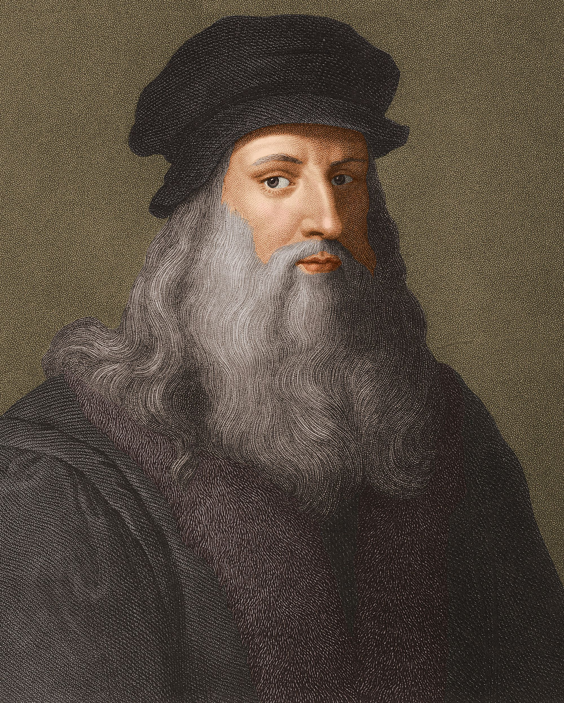

Leonardo da Vinci
LEONARDO DI SER PIERO DA VINCI (Bu ses hakkındatelaffuz (yardım-bilgi)) (15 Nisan 1452-2 Mayıs 1519), Rönesans döneminde yaşamış İtalyan hezärfen, döneminin önemli bir filozofu, astronomu, miman, mühendisi, mucidi, matematikçisi, anatomisti, müzisyeni. heykeltıraşı, botanisti, jeoloğu, kartografı, yazarı ve ressamıdır. En tanınmış yapıtları Virtus Adamı (1490-1402). Mona Lisa (1503-1507) ve Son Akşam Yemeği dir (1495-1497). Rönesans sanatını doruğuna ulaştırmış, yalnız sanat yapısına değil, çeşitli alanlardaki araştırmaları ve buluşlarıyla da tanınan, dunyanın gelmiş geçmiş en büyük sanatçılarından ve dehalarından biri kabul edilmektedir.[1]

Son Akşam Yemeği
SON AKŞAM YEMEĞI YA DA SON YEMEK (Ingilizce: The Last Supper (Di Lest Sapir)). Italyanca: Il Cenacolo (il Çenakolo) ya da L'Ultima Cena (Lultima Çena)], Hristiyan inanışına göre İsa'nın çarmıha gerilmesinden önceki akşam havarileriyle yediği son yemek. Bu yemek sırasında yaptığı konuşmanın uzunca anlatıldığı Yuhanna Kitabı'nda Isa Mesih onlara, kendisi aralarından ayrıldıktan sonra gelecek olan Paraklitle teselli bulmalarını söyler. Son Akşam Yemeğinde İsa ve Havarileri Kutsal Kaseden Şarap İçiyorlar ve Ekmek yiyorlardı.